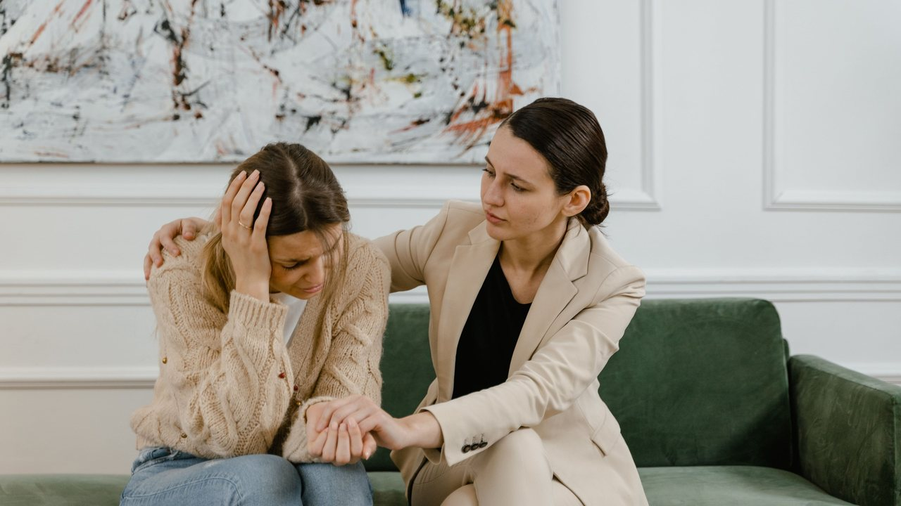
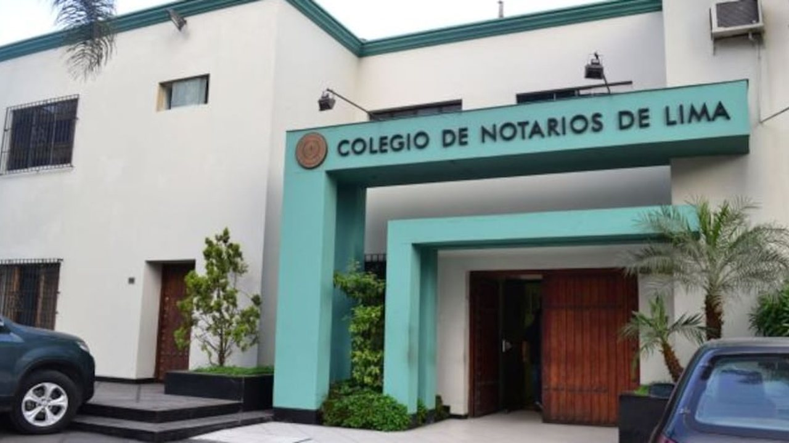
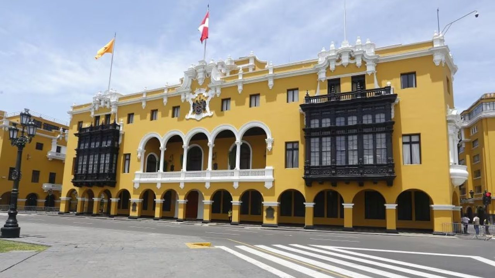
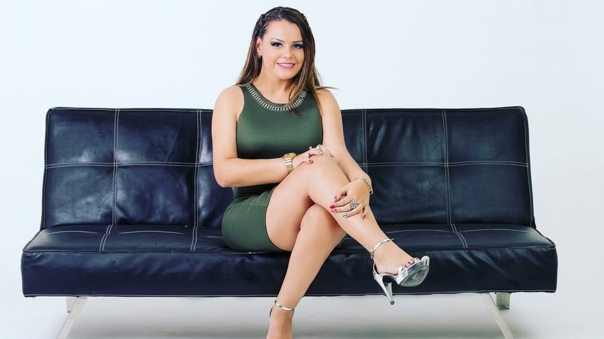
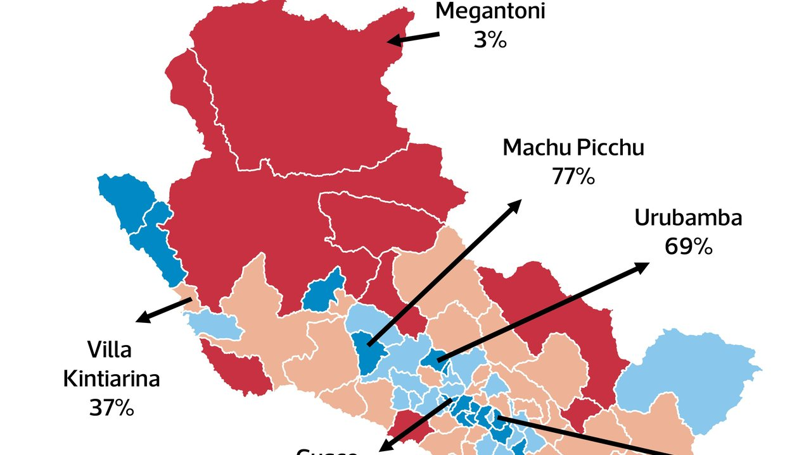

Un excrema puso el 1 a 1 en Tarma y Cristal dejó de depender de sí mismo en el Clausura Así terminó la Tabla del Clausura, a sólo una fecha del final.





Un excrema puso el 1 a 1 en Tarma y Cristal dejó de depender de sí mismo en el Clausura Así terminó la Tabla del Clausura, a sólo una fecha del final.
La jefa de la Oficina de Recursos Humanos del Congreso de la República, Sonia Polino, estaría involucrada en un presunto conflicto de intereses por la contratación de Katherine León Lescano, esposa del abogado de su hijo.
Susy Díaz regresa a Perú tras denuncia de Florcita Polo contra su expareja. La noticia fue confirmada por Deysi Araujo, amiga cercana de la excongresista, quien brindó declaraciones a 'Trome' y reveló que ambas volverán a Perú el lunes 9 de noviembre.
“Las cifras muestran que vamos en el camino correcto, sabemos que tenemos un largo camino por recorrer, agradecemos el apoyo de la Policía, las Fuerzas Armadas y el sistema de justicia”, afirmó en una transmisión a través de sus redes sociales.
A falta de dos fechas para el final del torneo, conoce aquí qué partidos se disputaron en la fecha 16 del Clausura y cómo se movieron las tablas. CD Moquegua juegan y EN DIRECTO, por la fecha 16 del Torneo Clausura. León por el Torneo Apertura de la Liga MX 2026 es imperdible.
El ministro de Economía y Finanzas, Elmer Cuba, señaló hoy que el bono anunciado por el Gobierno para los afectados por el fenómeno El Niño sería de entre 200 y 180 soles mensuales, por el tiempo que dure la afectación laboral.
Este domingo 1 de noviembre, Cusco FC enfrentará a Sport Boys por la fecha 15 del Torneo Clausura de la Liga 1 2026. Sport Boys superó a FC Cajamarca (4 a 2) y cayó ante Juan Pablo II (2 a 0) en las dos últimas fechas.
El ministro de Trabajo y Promoción del Empleo, Juan Sheput, afirmó que el liderazgo de la presienta Keiko Fujimori, se consolidará con las diversas obras de prevención que ya se vienen ejecutando para reducir los efectos adversos ante el fenómeno El Niño.
Desde su director: Vanselow fue durante años doble de acción de Liam Neeson y hoy el irlandés de 74 años de edad le devuelve al favor protagonizando esta historia escrita por Thompson Evans y que, hechas las sumas y las restas, cumple con lo justo.
Cada edición dura menos de dos minutos. En la web tienes el resumen de cada historia y el enlace directo al medio original para leerla completa.
Conoce Olfatecho →